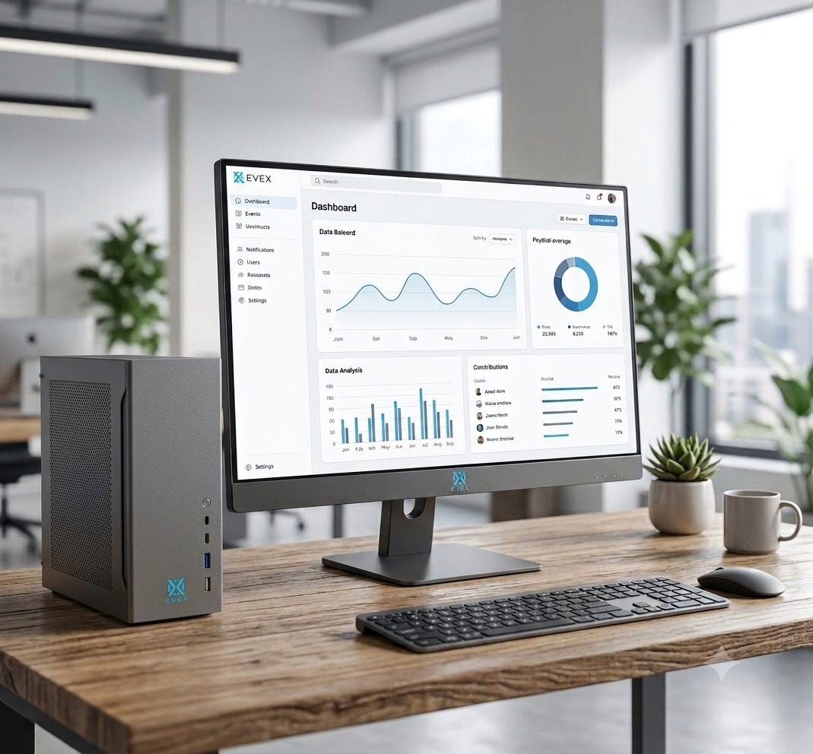
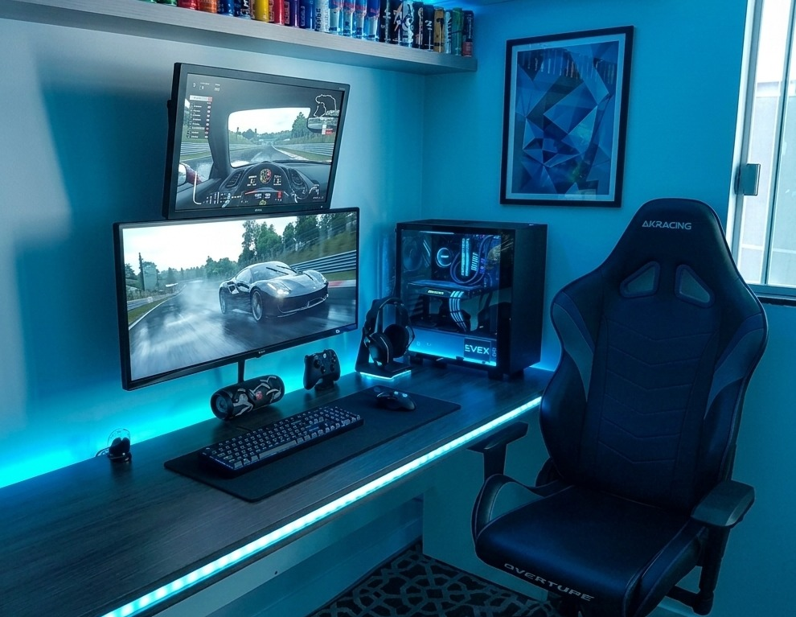
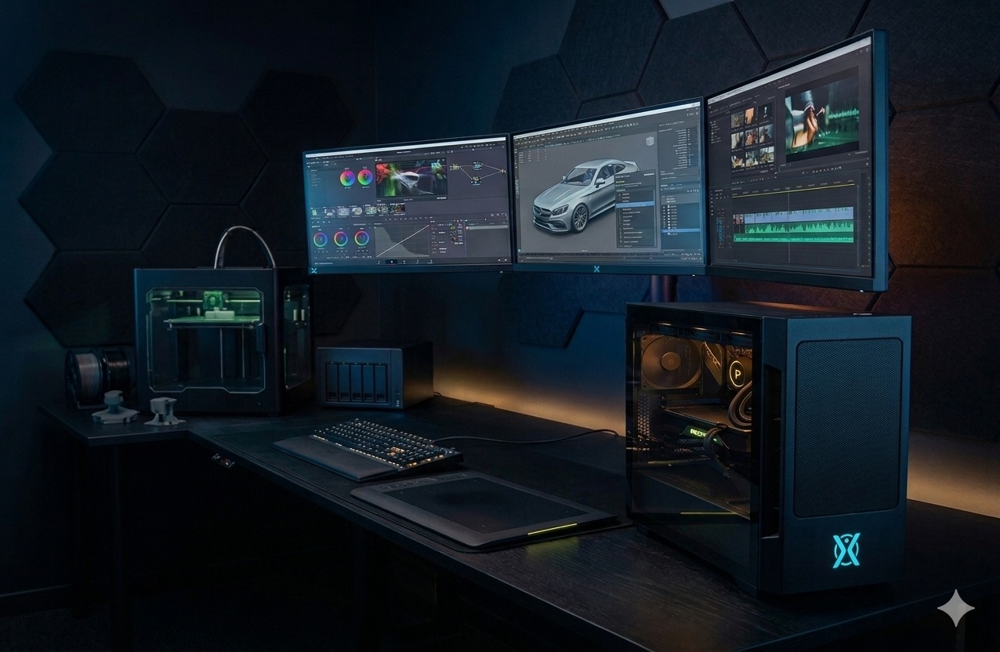

Todos os computadores desktops, independente de qual o seu propósito, devem ter isso:

Esse tipo de computadores desktop é focado em produtividade, estabilidade, durabilidade e é claro, ele é custo-benefício. Também se destaca por dispensar a necessidade de uma placa de vídeo, já que os gráficos integrados ao processador dão conta de todas as tarefas diárias. Além disso, o SSD garante que o sistema e os programas iniciem em poucos segundos. Por apresentar essas características, seu uso ideal é voltado para rotinas de trabalho e estudos, por exemplo usando o pacote office.
Valor médio: R$ 1.500 a R$ 2.500

Seu foco é rodar jogos de ultíma geração com alto desempenho, a melhor capacidade gráfica e fluidez. E tudo isso com um jogo super pesado. Esse sim exige uma placa de vídeo para alta resolução. O SSD também é necessário, mas ainda mais rápido. Processador potente e memória RAM no mínimo 16GB. Por fim um sistema de refrigeramento, já que como normalmente é usado por muito tempo o computador superaquece, por isso, é utilizado grandes gabinetes, múltiplos coolers ou refrigeração líquida, além de fontes de energia potentes e de alta eficiência. O uso ideal é obviamente para aqueles que desejam jogar jogos do melhor modo.
Valor médio: R$ 3.500 e R$ 15.000

Pra finalizar, as workstations são computadores focados em poder de processamento bruto, confiabilidade extrema e uma grande precisão. Os componentes mudam bastante nessa categoria, é tudo basicamente, profissional. O processador não é comum, mas sim usam linhas profissionais, que tem a capacidade de processar multíplos dados simultaneamente. A memória RAM é chamada ECC, o seu diferencial é que ela pode detectar e corrigir automaticamente corrupções de dados em tempo real. Isso evita que o computador sofra a "tela azul" ou trave no meio de uma renderização que já dura dias. A placa de vídeo é melhor que a gamer, ela é profissional, possue drivers certificadas. Não é usado somente um SSD, mas vários, porque se um falha tem outro para compensar.
Valor médio: R$ 25.000 a R$ 60.000+